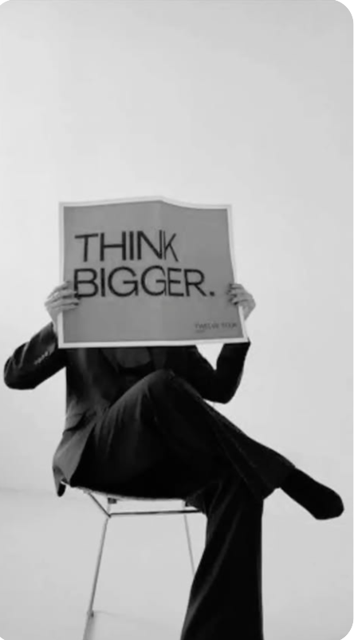
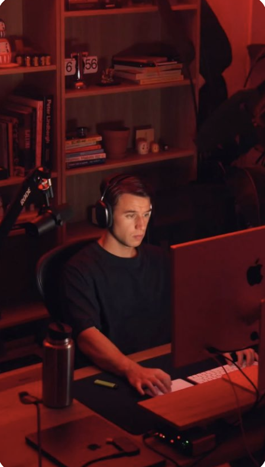
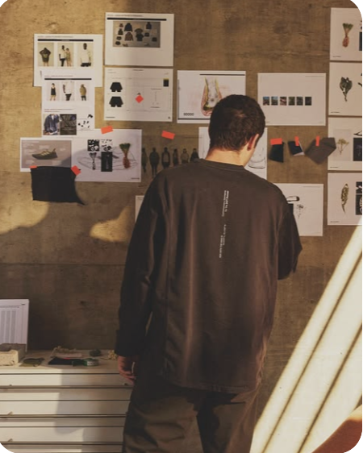
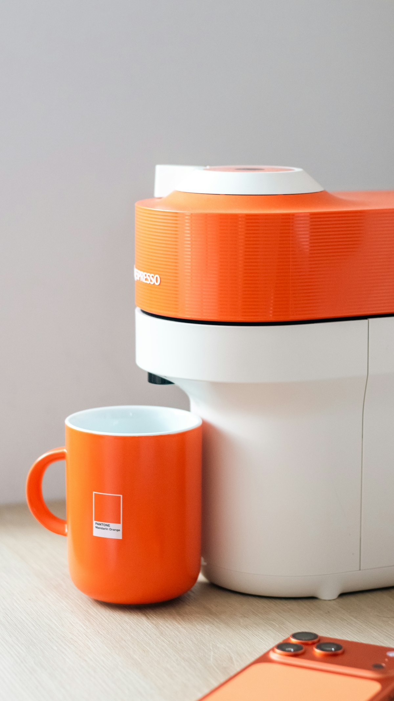
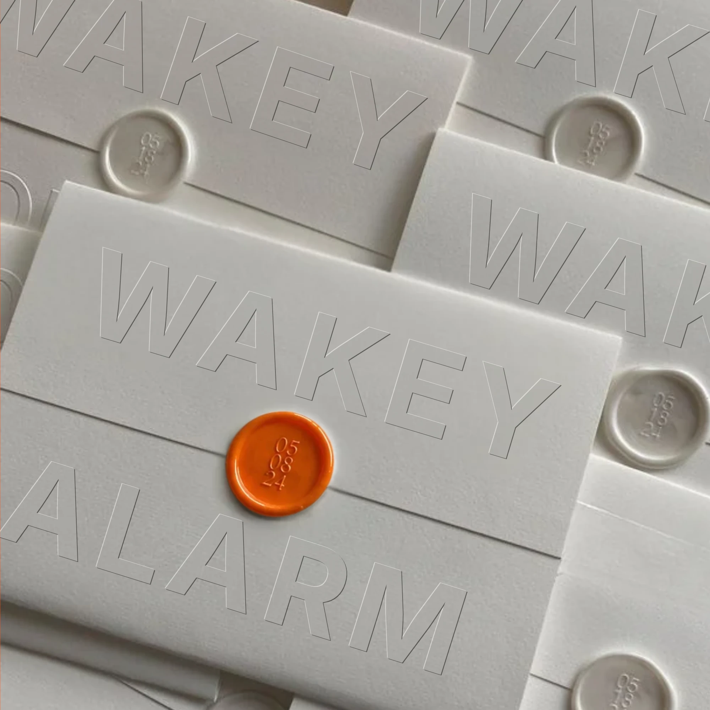

wakey
Phone-free alarm clock
The first thing you touch in the morning shouldn't be your phone. No snooze loop. No doomscroll before breakfast. No missed runs either.
You don't read email. Neither do we. Add your number and we'll WhatsApp you instead.
Something went wrong. Try again in a moment.
First question already here. What would feel fair to pay for wakey?
Noted. That's useful to know.
We'll ask what you think before we ship anything.
Sound familiar
- 01Alarm goes off on your phone.
- 02You check "just one notification."
- 03Twenty minutes gone before your feet hit the floor.
- 04The run you planned happens tomorrow. Again.
It's not a willpower problem. It's that your alarm clock and your biggest distraction are the same device, in the same hand, in the same second you wake up. wakey separates them.
The idea
wakey starts from one rule: the thing you touch first every morning shouldn't be the thing that steals it.
Everything else, the wake light, the schedule, the sleep timer, exists to make that one rule easy to live with, so your phone has no reason to be on your nightstand anymore.




your mornings.
What's actually inside
Built around one rule, not an app full of features.
Alarms
Set as many as you need. No phone required to change them.
Wake light
A light strip that eases you up before the alarm sound does.
Sound
Pick the tone. Or skip it entirely and wake up on light alone.
Brightness
The display dims on its own, so it never lights up the room at 3am.
Days & schedule
Weekdays only, weekends off, or whatever rhythm you actually keep.
Sleep timer
Falls quiet on its own, so you're not setting a second alarm to turn things off.
Meditation
A few minutes of quiet before the day starts asking things of you.
Settings
All of it lives on the clock. Nothing to install, nothing to update.
Build with the ones who show up first.
wakey exists as a working design right now, not yet in production. Everyone on this list gets asked what we build next, before we build it.

Before you ask
Questions worth answering upfront.
Does wakey actually exist yet?+
It exists as a working design, the render you just turned around above. It hasn't gone into production. The people on this list decide what gets built first and get first access when it does.
When does it ship?+
No fixed date yet, on purpose. We're building this with the waitlist, not for a deadline. First access always goes to the list, in order.
What will it cost?+
Not decided yet, honestly. It's one of the first questions we ask everyone who joins the list, right after they sign up above.
Does this replace my phone alarm completely?+
Yes, that's the point. Alarms, days and schedule, wake light, sound, and a sleep timer all live on wakey, so your phone has no reason to be within reach when you wake up.
What if I need my phone nearby at night, just in case?+
Keep it charging in another room instead of on your nightstand. wakey doesn't need your phone close to wake you on time, so "just in case" stops being a reason to keep it within arm's reach.